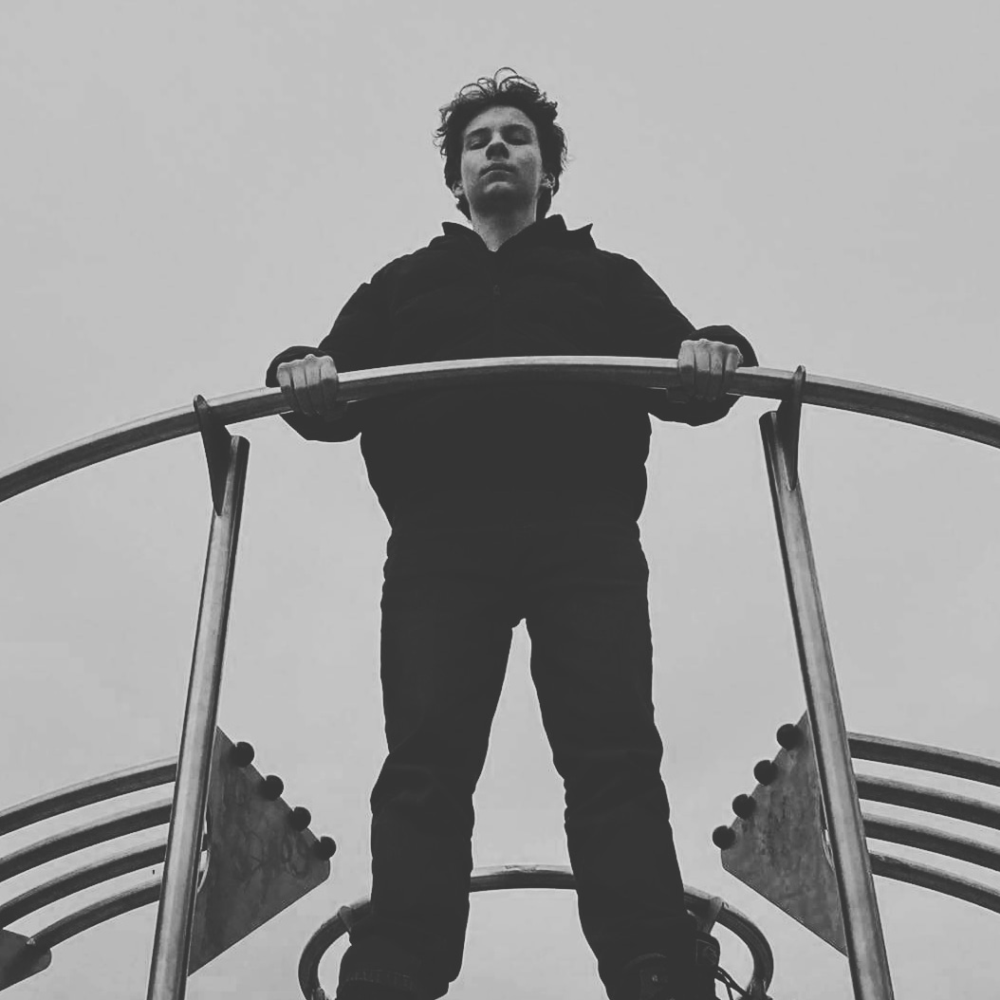

O mnie
Witam, nazywam się Jeremiasz i mam 15. Na tej stronie dowiesz się co nieco o mojej twórczości i jej dalszych losach.
Witam, nazywam się Jeremiasz i mam 15. Na tej stronie dowiesz się co nieco o mojej twórczości i jej dalszych losach.
Mimo iż póki co uczę się grać tylko na gitarze, to wiele aspektów muzyki, sprawia mi przyjemność. Od słuchania po mix'owanie i tworzenie.
Właściwie to im zawdzięczam większość swoich pasji.
Moim absolutnym faworytem jest Red Dead Redemption 2.
To właśnie dzięki Red Dead'owi, a przynajmniej jego ścieżce dźwiękowej, rozpocząłem grę na
gitarze, ale o tym więcej w zakładce "Muzyka".
Posiadam również Instagrama, gdzię wrzucam różne ujęcia z trybu fotograficznego.
Te ciekawsze umieściłem w zakładce "Galeria".
Nie jestem w stanie tu za dużo powiedzieć, albowiem jestem dopiero na etapie nauki. Póki co nauczenie się każdej kolejnej małej rzeczy daje mi ogromną satysfakcję. Więc chcę się rozwijać dalej, a kiedyś chciałbym stworzyć swoją własną grę.